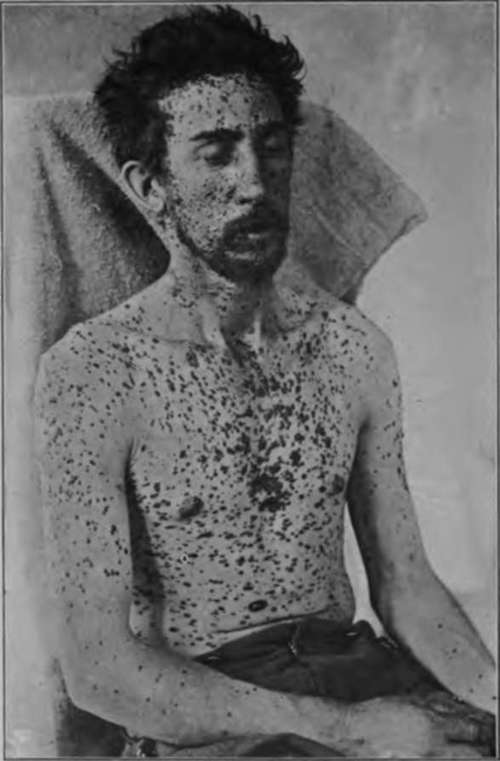
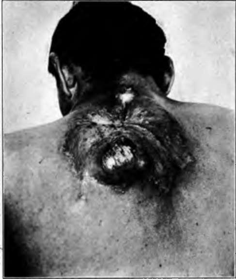

Chapter IX. Nevocarcinomata And Malignant Melanomata (Malignant Pigmented Moles)
Description
This section is from the book "Skin Cancer", by Henry H. Hazen, A.B., M.D.. Also available from Amazon: Skin Cancer.
Chapter IX. Nevocarcinomata And Malignant Melanomata (Malignant Pigmented Moles)
It is a rather curious fact that, although it has been known for many years that the most malignant of all tumors spring from the skin and are deeply pigmented, yet only within the last ten years has the significance of that fact been generally recognized. In 1903 Keen* and Bloodgood,* independently, showed that these growths almost always, if not invariably, spring from moles or nevi, and recommended that such growths be removed as a prophylactic measure.
In dealing with the clinical forms, it is wise to bear in mind the words of Unna,* who states: "Since the melanocarcinomata of the skin always take their origin in pigmented moles, and, on the other hand, there can hardly be nevocarcinomata completely without pigment, it is well to describe together these two groups of tumors, which are combined by gradual transitions. And, further, in every other aspect, the character of the two is the same. In all cases we are dealing with rapidly growing, pigmented carcinomata, of alveolar structure, which soon lead to infection of the lymphatic glands, to more or less melanotic metastasis and a fatal termination".
Clinical Course
Clinically, these tumors have their origin in nevi, using the term in its broad sense, most frequently from either congenital or acquired, almost flat, deeply pigmented moles of the nonhairy variety. It is usually noted that a mole, usually one that has been subjected to trauma, begins either to grow or to ulcerate, these changes usually not being especially marked. Metastases frequently develop before any change has been noted. The general impression among the profession seems to be that these metastases usually involve the skin and the viscera, and that the lymph glands are spared, but this view is by no means the correct one, for in the vast majority of instances there is marked glandular involvement. Clinically there are four main courses, which, of course, grade off, one onto the other. First, it may be noted that, very soon after changes are noted in the mole (or nevus), numerous other pigmented spots make their appearance in the skin, looking very much like other moles (Figs. 47, 48). They usually, however, grow rather rapidly; some of the glands begin to enlarge; a number of fairly large, more or less pigmented, tumors appear on or in the cutis, and signs of visceral disturbance arise, from which the patient speedily dies. Second, there may be marked evidence of metastasis in some of the internal organs, usually the liver, and but few cutaneous symptoms; there may or may not be glandular enlargement. Third, there may be very marked involvement of the neighboring glands, without any other signs of trouble than the changes in the mole. As a general rule in this type, the tumor growth at the site of the mole is comparatively large. These cases may live for a number of years.
*Keen: Jour. Amer. Med. Assn., 1903.
*Bloodgood: Progressive Medicine, Dec., 1903.
*Unna: Histopathology of Diseases of the Skin.
Fig. 47.-This figure shows widespread cutaneous metastases from a malignant pigmented mole (nevoearcinoma). There were also visceral growths. (J. W. Perkin's collection).
Fig. 48.-Two years ago this patient had an ordinary pigmented mole on his back that was Irritated by his suspenders. It has now become malignant, and has recurred in spite of an extensive operation. There are also malignant growths In the skin and viscera. (Heldingsfeld's collection).
Fourth, involvement of the glands does not become apparent for a number of years, and further extension is but slow. The first three forms do not require to be proven by illustrations, but the last type is sufficiently rare to merit a case report. The patient was a woman aged 50, who entered the Johns Hopkins Hospital, with the following history. She was a farmer's wife from Maryland, and had an ordinary deeply pigmented mole upon her forearm, that was one day pecked by a hen so as to bleed. Several months later the mole began to grow, and slight ulceration began to manifest itself. The growth was excised by a local physician. Almost a year later local recurrence took place, and this was again excised. Two years later there was another recurrence, and there was wide operative removal; at the same time a number of enlarged, deeply pigmented glands were taken out from the lower portion of the axilla. Two years later, or five years from the appearance of the original trouble, there was an inoperable recurrence in the axilla. In this case early amputation, or possibly a complete removal of the axillary glands, would have saved the life of the patient.
These growths are especially liable to show themselves in certain localities. They may appear upon the face, arms, or body, but also upon the sole of the foot, especially in women, and at times under the finger nail, forming the so-called melanotic whitlows.
Pathology
Pathologically, they always spring from nevoid cells, and it is still a matter of dispute as to whether these cells are of epidermal or of mesoblastic origin; hence it is questionable whether the tumors should be called carcinomata or sarcomata. Fordyce* has recently reviewed the question very thoroughly, and the following account is largely derived from his excellent article. Following the work of von Demieville* in 1880 and von Recklinghausen* in 1882, these neoplasms were regarded as endothelial in origin until 1893, when Unna promulgated his now well-known views that they were of epiblastic descent. Unna states: "From the fact noted in describing nevi, that the well-known cellular cords of soft nevi consist of true epidermic epithelium, which has been snared off from the surface epithelium in the embryonic period or in early youth, the development of cancer in them is quite comprehensible, indeed self-evident." Krompecher,* too, agrees with Unna, stating that the masses of nevoid cells can be seen springing from the basal layer of the epidermis in many instances; that, furthermore, they can be demonstrated to arise directly from the basal cells. He states definitely that the prickle cells do not degenerate into nevoid cells, as Hodara* says. Gilchrist has shown the same things as Krompecher.
Continue to:
- prev: Adenoma Sebaceum
- Table of Contents
- next: Nevocarcinomata And Malignant Melanomata (Malignant Pigmented Moles). Continued
Tags
bookdome.com, books, online, free, old, antique, new, read, browse, download